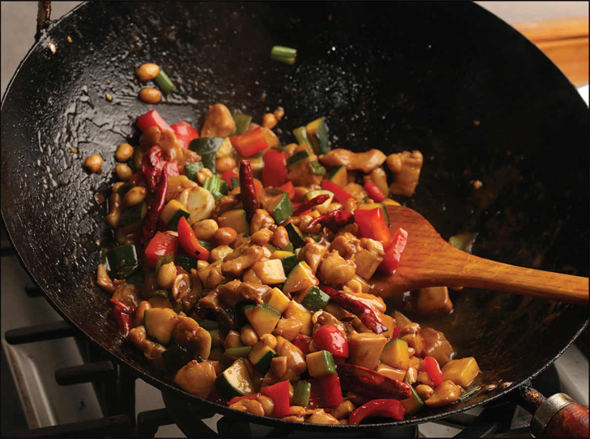
Many things can be called fast, versatile, and fun. My old Kodak Pocket Instamatic. Transformers. Bo Jackson. But add delicious to that mix and suddenly your list gets a whole lot shorter.
Stir-frying is fast. Most stir-fry recipes take under half an hour start to finish, and that’s including prep time. The actual cook time of most stir-fries is just a few minutes.
Stir-frying is versatile. You can stir-fry meat. You can stir-fry seafood. You can stir-fry Asian vegetables or Western vegetables or tofu or rice or corn or mushrooms or lettuce or nuts or noodles or virtually anything that’s at least semisolid and edible.
Stir-frying is fun. I mean, I think it’s fun. If you enjoy activities that are simple enough for a first-timer to get good results, but also reward you greatly as you practice and improve your skills, you may think it’s fun as well.
Stir-frying is delicious. You know it, I know it, anyone who’s eaten at even a mediocre Chinese chain restaurant knows it. Stir-fried vegetables retain their bright, fresh crispness and color. Properly marinated, massaged, and stir-fried meats are tender and packed with flavor. (We’ll talk more about the importance of massaging meat later.) Stir-fried noodles and rice pick up a flavorful char and, when you get really good, some of that elusive wok hei—the smoky aroma you find at good Chinese restaurants. (You’re gonna learn how to get it right at home, no matter what kind of stove you’ve got.) Stir-fries incorporate sauces, condiments, spices, pickles, and aromatics that pack flavor into foods quickly and easily, which means you can build complexity and depth into a dish even on a busy weeknight.
Of all the techniques I’ve learned over the years from all over the world, stir-frying is the one I’d take with me to the desert island. It’s how the plurality of meals in my life have been cooked, and I imagine it’ll stay that way until I die.*
The Anatomy of a Stir-Fry
More than anything, stir-frying is about technique. In a November 2018 study led by David Hu, a professor of fluid dynamics at the Georgia Institute of Technology, Hu used computer software to track and model the motion of fried rice in a wok as it was tossed by professional Taiwanese chefs. What they found was that the motion of a stir-fry could be broken down into oscillations that last about a third of a second. Within each of these oscillations, there are four distinct phases, each composed of translation motion (pushing and pulling the wok farther and closer) and rotational “seesaw” motion (pushing the handle up and down so that the wok pivots where it makes contact with the burner ring) that are slightly out of phase with each other, resulting in a back-and-forth rocking that causes food in the wok to leap toward the chef in a cascade, effectively mixing it. Here’s what those phases look like in slow motion:
PHASE 1. With their hand firmly on the handle or the side of the wok closest to them, the cook pushes the wok forward while it is tilted downward away from them.
PHASE 2. As the wok gets close to its maximum distance away from the cook, the cook will begin to push down on the handle, causing the back edge of the wok to begin tilting back upward.
PHASE 3. While the back edge of the wok is still rising, the cook will begin pulling the wok back toward them. During this phase, the rotational motion and the rapid translational acceleration cause the food to leap. The food near the top lip of the wok will feel the greatest acceleration, while the food closer to the base of the wok will feel less. This is what causes the cascading waterfall effect.
PHASE 4. The cook continues to pull the wok toward them, catching the food. Just as the wok reaches its point closest to the cook, the cook lifts up the handle, tilting the wok downward again and getting ready to push the wok forward to repeat Phase 1.
So, in effect, each rocking motion occurs in slight anticipation of each translational motion.
It is, in many ways, similar to the way I try to teach my daughter to pump her legs on the swing: To do it effectively, you need to straighten your legs and lean back just before you reach the apex of your back swing, and you need to lean forward and bend your knees just before reaching the apex of your front swing.
As Grace Young explains in her book Stir-Frying to the Sky’s Edge, the term stir-fry is misleading. Stirring, in the Western sense of moving things around the bottom of a pan using a spoon or spatula, is not what you want to do in a wok. “Tumble-fry” or “toss-fry” would be more accurate. Central to the technique of stir-frying is tossing food through the air. Why is this so vital?
The steam that evaporates off food and into your kitchen actually contains a huge amount of energy. Stir-frying takes advantage of this by recapturing some of that energy, which in turn speeds along cooking and helps develop intense flavors. In Modernist Cuisine: The Art and Science of Cooking the authors demonstrate how a column of hot air and steam will rise up around the back of a wok. As you stir-fry, you toss the food through this steamy air. The steam condenses on the surface of the food, depositing “formidable amounts of latent energy,” which rapidly heats it. As it falls back into the wok, which has now had a chance to recover some of its heat energy, that surface moisture is revaporized and the cycle continues.
This is why stir-frying is such a quick cooking process and why the shape of a wok is so important: it allows for dramatic tossing.
So You Want to Practice Stir-Frying
Does your food more often end up in your stove grates or on the floor when you try to toss it? Does it seem like no matter how vigorously you stir the contents of your wok, nothing seems to cook evenly? Don’t worry; you’re not alone! Like riding a bike or trying to plug in a USB cable, stir-frying is one of those things where you have to keep at it until it suddenly just clicks. If you stir-fry a few times per week, it should come quickly enough, but if you want to speed up the process (and perhaps save yourself from a few hot or greasy spills), the best way I know how is to fill your wok with a cup of dry lentils, beans, or rice.
Here’s the basic process, though images and words can only get you so far—practice is the only way you’re going to get it.
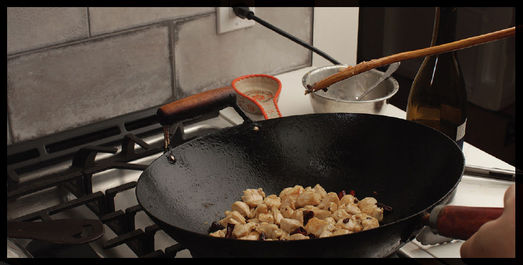
MOVE 1 • Holding the handle of the wok, tilt the wok slightly away from you.
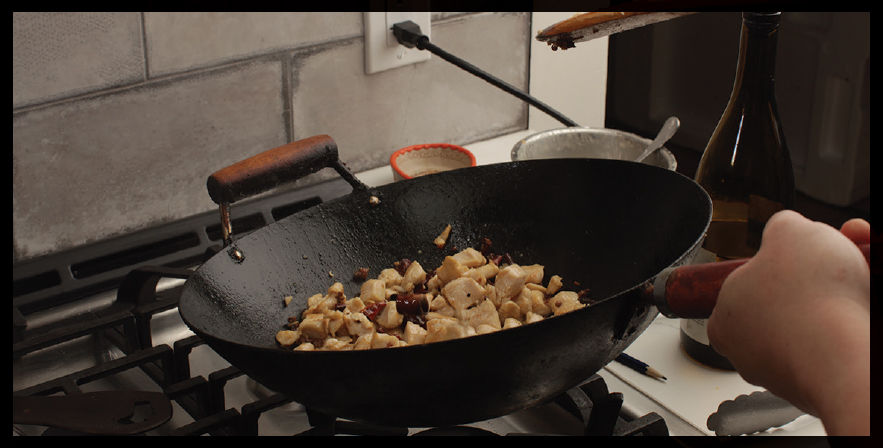
MOVE 2 • Push the wok forward in a smooth, relatively gentle motion, keeping it tilted away from you the whole time.
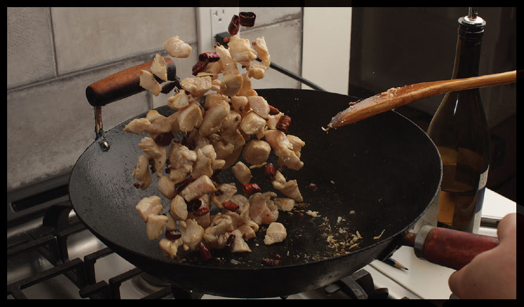
MOVE 3 • Just before you start pulling the wok back toward you, tilt it upward by pushing down on the handle. You should begin pulling it back toward you with a quick jerk about halfway through its upward rotation. This should send the food flying up into the air, with a parabolic trajectory that sends it back toward you.
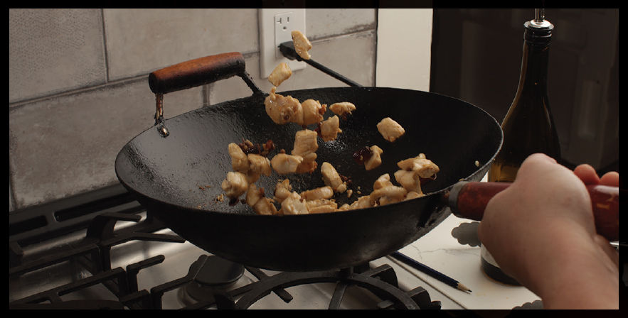
MOVE 4 • Catch the food in the wok as you continue to pull it backward, then start to tilt it back down by lifting the handle just before you start pushing the wok forward again to repeat the cycle. As you practice, you’ll find a natural rhythm of tossing and catching that varies slightly depending on how much food is in your wok, but it’s typically two to three cycles per second.
How to Stir-Fry, Step by Step
To try to distill stir-fries down to a basic outline like this does a disservice to the vast array of flavors and textures you’ll find in stir-fries throughout East Asia and the food courts of America, but we’re gonna do it anyway.
Before we even get to the ingredients, the most important element in a stir-fry is the setup. It’s typically a lightning-fast cooking process, which means no time to go digging through the fridge for that soy sauce you forgot to pull out. No waiting for that thick oyster sauce to dribble out of the jar. All of your ingredients need to be measured, chopped, mixed, and ready to go. Moreover, you should have all your tools on hand. Your mission is a delicious dinner, and this is your battle station. Make sure you’re prepared.
Here is an equipment list for a basic stir-fry. All of these should be within arm’s reach before starting:
•Your wok, on your stove’s hottest burner
•A wok spatula with an appropriate resting place (like a spoon rest, a folded towel, or a stable crock)
•Clean bowls for holding cooked ingredients before returning them to the wok
•A serving platter for immediately transferring the food after cooking
•Diners ready to eat
Additionally, depending on the recipe, you might also consider:
•Some recipes in this book require you to cook certain ingredients in simmering water before stir-frying them (velveted meat, green vegetables, silken tofu, and noodles, for instance). Keeping a saucepan of simmering water on a separate burner, along with a spider, makes these steps much more streamlined, especially if you reuse the same water for multiple recipes cooked in series.
•A pot with a fine-mesh strainer set in it for collecting the excess oil some stir-fry recipes have you drain off, especially if using the oil-velveting technique
•A butane or propane torch is good for dishes that feature wok hei flavor (see here) when you don’t have a very powerful gas burner or are working with electric or induction cooktops
•If your range does not have great ventilation, I would suggest some powerful fans to direct smoke out of an open window as well as temporarily disabling your smoke detectors. Stir-frying is often a smoky process. There’s no way around that.
Now that we’ve covered the battle station, let’s talk about ingredients, which should also be within arm’s reach, preferably in individual small bowls (feel free to combine ingredients that hit the wok at the same time), or at the very least in neat piles on a big cutting board with a bench scraper handy for picking those piles up.
I’m going to simplify a multifaceted and diverse cooking technique into a very simple set of ingredients. Please don’t get upset yet; we’ll get to the more complicated stuff later. For now, just know that most stir-fries consist of a subset of the same basic ingredients:
OIL. Oil is needed to cook foods evenly and, more importantly, to help fat-soluble flavor compounds from aromatics coat everything in the pan. Neutral, high-heat-friendly oils like peanut, soybean, and rapeseed are best. Oil is also essential for dishes that achieve wok hei, as it’s the oil singeing that lends some of that smoky flavor to the food.
OIL FLAVORINGS. These are aromatics that are bloomed in the oil before cooking begins in order to flavor it. Ginger, garlic, chiles, and dried spices (such as Sichuan peppercorns) are all common oil flavorings.
PROTEINS. If your stir-fry is a suit, either the protein or the vegetables are the jacket and slacks, while the other is the tie. And just as with a suit, the tie is often optional. When the protein is the main element, it is usually marinated, brined, and/or velveted (see here) before cooking to add flavor, moisture, and tenderness. When used as a flavoring, it’s most often ground or finely chopped. Proteins should be cut to uniform size and shape so they cook evenly.
VEGETABLES. Like proteins, vegetables should be cut into uniform pieces to promote even cooking. Unless you are following a recipe that specifically calls for more vegetables, try to limit your vegetable selection to one or two carefully paired choices—otherwise you end up with what I call “food court syndrome,” where there’s so much junk inside that it’s impossible to cook any one ingredient perfectly. (Avoid canned baby corn at all costs.†)
AROMATICS. Aromatics are intensely flavored ingredients that are chopped, sliced, or slivered finely enough that they readily give up their flavor and distribute themselves evenly throughout the dish. Common aromatics in this book are fresh chiles, herbs, garlic, ginger, scallions, lemongrass, and preserved and pickled vegetables.
SAUCE. Asian American restaurants tend to serve their stir-fries with a ton of glossy (or, in some unfortunate cases, gloopy) sauce, a practice I always imagine developed when restaurant owners realized their customers wanted extra sauce for their bland rice.‡ While saucy stir-fries do exist in Asia (not to mention dishes like curry, which are soupier than even Chinese American stir-fries), Asian stir-fries tend to be far drier than their Asian American counterparts, with just enough sauce to add flavor and a glossy sheen to meat or vegetables. Both styles of saucing can be delicious if done right. Stir-fry sauces often include ingredients like broth, soy sauce, rice wine, vinegar, sugar, oyster sauce, or any number of prepared chile pastes, fermented bean pastes, curry pastes, coconut milk, and citrus juices.
THICKENER. Stir-fry sauces are sometimes thickened with a starch, such as cornstarch or arrowroot, which allows it to coat and cling to ingredients rather than pooling off into the serving platter. A thickener will also help fat emulsify into the sauce instead of collecting into greasy puddles. This thickener is incorporated by stirring it with a bit of water to form a slurry before adding it to the wok. The key here is subtlety. Add it a little bit at a time. You can always thicken your sauce more, but you can’t unthicken it without diluting it.
GARNISHES. These are kind of like the sprinkles on the ice cream cone—ingredients that don’t require much actual cooking but can simply be stirred or sprinkled in at the right time. This can be roasted nuts like peanuts or cashews (although if authenticity is your goal, they should be fried from raw); crunchy garnishes like fried shallots or fried garlic; fresh herbs or other vegetables like basil, cilantro, or scallions; or ground spices like Sichuan peppercorns or cumin.
Now that we’ve got that simplified outline under our belts, let’s talk about the actual cooking process.
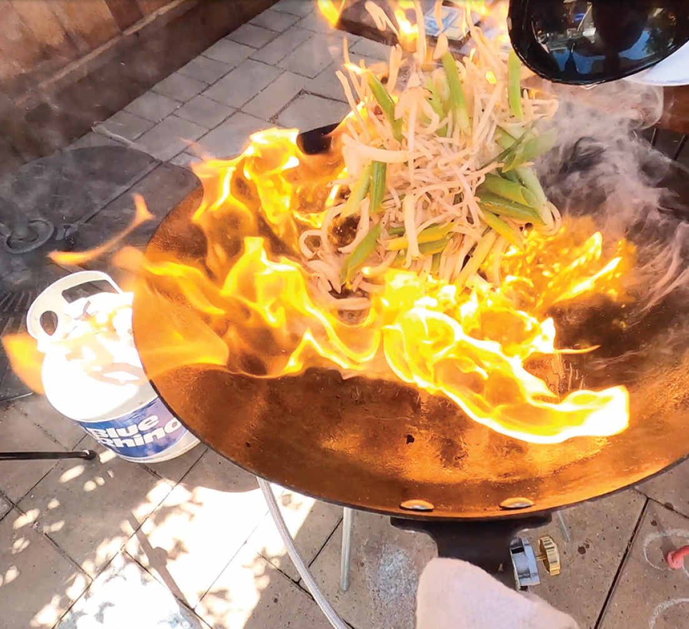
Restaurant-Style Stir-Fry at Home: Chasing the Flame
Want to know why your at-home stir-fries taste fundamentally different from those from a restaurant? It’s not better ingredients, it’s not ancient Chinese secrets, it’s not even MSG (although all of those things can help). It’s this: ridiculously high heat. And we’re not talking Atlanta-on-a-hot-day high heat; we’re talking campfire-set-by-a-Red-Dragon-who-came-straight-from-the-depths-of-Mount-Doom-if-Mount-Doom-were-on-the-sun hot. A Chinese restaurant range puts out about 200k BTU/hour§ of heat energy, a good twenty to twenty-five times more powerful than a run-of-the-mill home burner.
These days, in the West there seems to be this idea that it’s impossible to make a great stir-fry without one of those high-powered restaurant-style burners. (I’m probably partially responsible for this misconception.) Fortunately, that’s not true.
For one thing, it’s not like every apartment kitchen in China is outfitted like a restaurant. Most homes are equipped with gear not that different from your own home kitchen, and those work perfectly fine for most stir-fries, especially home-style dishes (you’ll find plenty of those dishes in this book). But our cravings are colored by our experiences, and as a kid who grew up in the Cantonese-influenced Chinese American food landscape of New York City in the 1980s, when I crave a stir-fry, more often than not it’s going to be a re-creation of a restaurant-style dish, with those distinct flavors that come from a high-octane wok setup. (See here for more details on wok hei, the smoky flavor you find in many Cantonese-style restaurant dishes.)
Take a look at a Chinese restaurant kitchen and you’ll see the wok chef tossing the contents of the wok with one hand while scooping up bits of sauce and seasonings with the wide flat ladle held in the other, all the while using a knee to adjust the gas flow to the burner. It’s a beautiful dance.
These high-output burners allow a skilled cook to sear meat rapidly without overcooking it, to give a hint of smokiness to the vegetables while keeping them bright, fresh, and crisp, or to rapidly reduce added sauces, creating complex new flavors. High heat seems essential to pull off this restaurant style of cooking. If you use the exact same steps with a home burner, you end up with meat that steams in its own juices and vegetables that are drab and dreary rather than bright and crisp.
So the question is, is it possible to cook restaurant-style dishes with a home burner?
The answer is an emphatic yes! Let’s wok through some of the science.
The Right Amount of Thickener
The quantity of starch called for in any given recipe is at best a rough estimate. Adding just the right amount of starch to thicken a sauce is like trying to shoot a moving target; any sauce in a hot wok will continue to lose moisture through evaporation, which can cause the thickener to concentrate, turning the sauce from glossy and light to gloppy and thick. Moreover, a starch-thickened sauce doesn’t fully thicken until it reaches a hard simmer. For this reason, it’s important to add thickener a small quantity at a time and to wait until the very end of cooking before adding it to ensure that you’ve got the right texture before the dish comes out of the wok.
If you’re familiar with the Italian technique of adding a few splashes of starchy pasta cooking water to pasta dishes at the last moment to lightly thicken the sauce and get it to cling to the pasta, the process of thickening a stir-fry sauce is very similar. As a stir-fry nears completion, I’ll splash in a little bit of a starchy slurry (cornstarch or arrowroot mixed in a small amount of cold water), then let the sauce come to a hard simmer before deciding whether or not to add more. If the sauce is too thin, another splash goes in. If it’s just right, I’ll immediately transfer it to a serving platter. If, on the other hand, I find I’ve accidentally overthickened it, I’ll add a splash of water or stock back into the wok to loosen it up again.
Professional Chinese chefs will frequently incorporate a cornstarch slurry in three distinct additions, fine-tuning the thickness of the dish with each addition.
Clean Your Vents!
Ranges with a vent hood will have filters that need to be cleaned regularly in order to operate efficiently and avoid the risk of fires. Stir-fries with their vaporized oil can be especially rough on these filters. I remove and wash mine (many are dishwasher-safe) at least once a month and recommend you do the same.
Stored Heat vs. Heat Input
When talking about stir-fries, there’s one important distinction to learn: the difference between stored heat energy and heat flux.
Stored heat energy is precisely what it sounds like: the energy that is stored in the pan itself. We measure this energy in degrees. When people ask you what the temperature of a given object is, they are really asking how much energy that object has stored up inside its molecules. Most cooking vessels we use are made of metal, and the amount of heat energy it can store is based on its specific heat capacity (the amount of energy a specific weight of the material contains per degree of temperature), and its mass (that is, functionally, its weight). You can review these concepts in the introduction on here.
Now, with Western cooking vessels, the stored energy in a pan is of vital importance. Most of the highest-quality Western cookware is thick and made of dense metals like cast iron or steel. The idea is that with proper preheating a Western pan will have enough energy stored in it that even when you add food to it—a big fat steak, for example—it won’t drop much in temperature, allowing you to cook your food in an even, predictable manner. If we go back to the bucket metaphor from here, a heavy Western skillet is like a big, fat bucket of energy. It takes a long time to fill that bucket (which translates to lengthy preheating), but once full, it’s got energy to spare—adding food to it will displace relatively little of its overall stored energy.
With a thick enough skillet and enough preheating—say to around 650°F or so—you could completely remove a pan from the heat, throw a steak in it, and still get a good sear from the stored energy. Once you’ve got your pan ripping hot, relatively little additional energy input is required to get good results.
A wok, on the other hand, relies on a different principle. Woks are thin, relatively lightweight vessels. The average wok is about a third the thickness of a standard Western pan. This means that at a given temperature, it’s got relatively little stored heat. It’s a small bucket that will quickly lose its energy stores as soon as you add food to it.
Thus, for good wok cooking, high heat energy input is required. Not only must the pan be ripping hot to start, but with most recipes you need to keep it above a high flame the entire time you cook in order to replenish the energy being pumped into the food.
Stir-Frying in Woks vs. Skillets
So why this distinction between stored heat and heat input/output? How are the two styles functionally different?
It’s because with Western cooking vessels, even heating is of utmost importance. You want the pan to be of a consistent temperature from the edge to the center. Thick-gauge metals with an aluminum core help achieve this, maintaining a relatively high cooking temperature from start to finish. Indeed, if you graph the average temperature in a Western skillet versus a wok over a home range, you’lli find that this is the case:
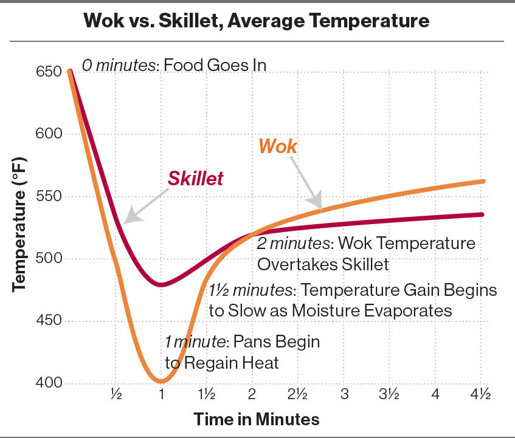
The leftmost edge represents the maximum preheat temperature of 650°F. When you add food to the pan, both a wok and a skillet show a rapid drop in temperature as heat gets transferred to the food. A Western skillet will drop to around 480°F, while a wok, because of its lower amount of stored heat energy, will drop all the way down to nearly 400°F. As the cooking continues, a Western skillet will slowly regain some of the energy that was lost when the food was added. Remember, a Western skillet is designed to heat and cool very slowly and evenly.
The wok, on the other hand, will regain that lost heat at a faster rate, but it’s beginning with a lower initial temperature—it takes nearly a full two minutes before it makes up for lost time and overtakes the Western skillet.
Aha!, you may be thinking. So a Western skillet is superior to a wok after all for cooking on a low-output burner!
Well, let’s take a look at a different graph, this time focusing only on the temperature of the bottom of the wok—the high-heat searing zone. For these readings, I added food, stir-fried it until it developed a reasonable sear, then pushed it to the sides of the skillet or wok.
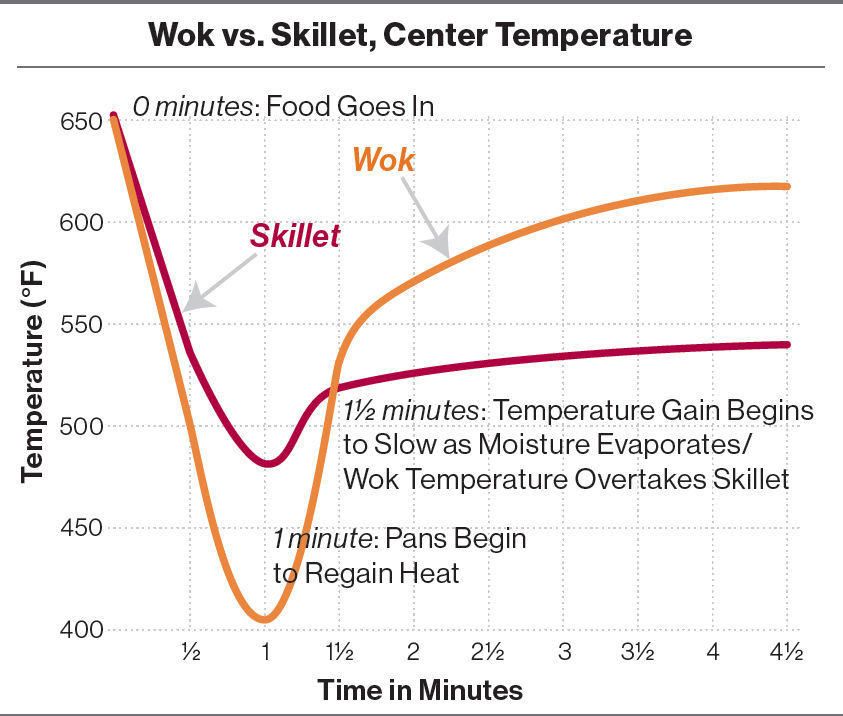
Now we see that in fact, in the area where it matters most—the very bottom of the wok where searing is taking place—a wok actually regains its heat significantly faster than a Western skillet does. Again, this is because a Western skillet is designed for even heat, while a wok is designed for reactive heat.
With wok cooking, you want different temperature zones inside the pan. You want a screaming-hot part at the very bottom. You want slightly cooler regions around the edges. You want heat rising up the sides of the wok and curling over the edge so that when you fling food up in the traditional stir-fry method, it hits a column of hot, steamy air. When food is pushed up the sides, the bottom very rapidly comes back up to hard-searing temperatures, priming it for the next ingredients.
To demonstrate this difference, I used a thermal imaging camera to show the heat patterns in a Western skillet vs. in a wok.
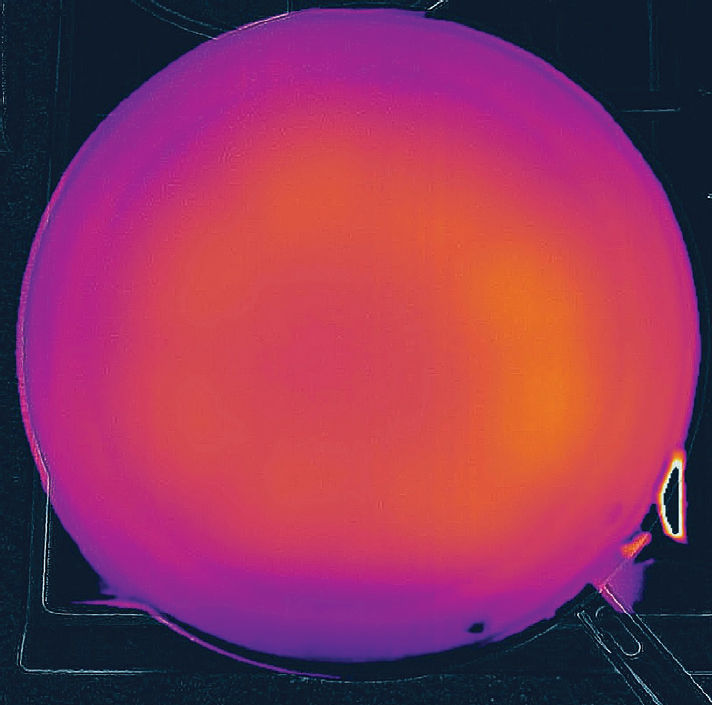
A preheated Western skillet has even heat all across its surface.
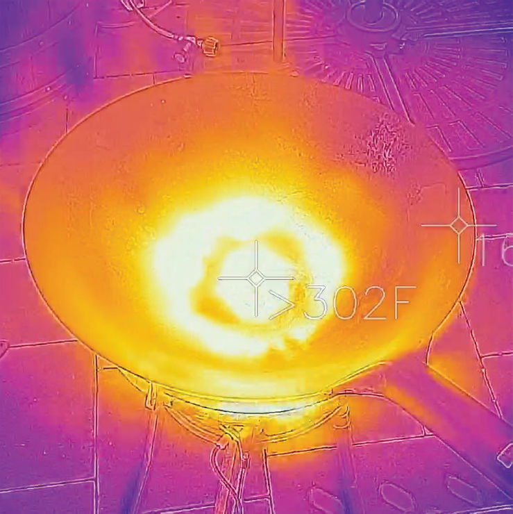
A preheated wok has a high-temperature zone in the very bottom and gets progressively cooler toward the edges.
So the key to good stir-frying on a home burner is to cook in small enough batches to allow this bottom section of the wok to remain hot throughout cooking. In a traditional Chinese-style meal with multiple small courses, this occurs naturally, as you are only cooking small batches of each dish. If you want to cook fewer dishes but larger portions, this means cooking in batches.
Whether I’m using a skillet or a wok for my stir-fry, I divide my meat and vegetables into one-pound portions (or even half-pound portions if I’m working on an especially slow burner) and add them to the wok one at a time, allowing them to sear and begin cooking before transferring them to a bowl on the side. Once the wok has regained some energy and starts smoking again, I cook the next batch, and so on. I can then mix everything back together at the very end just before adding my aromatics and sauce.
Will a Hot Wok and Cold Oil Really Prevent Sticking?
There’s a basic rule of thumb in wok cooking that goes like this: a hot wok and cold oil will prevent your food from sticking. The idea is that you preheat your wok over high heat until it is ready to cook, then add your oil immediately before adding other ingredients.
But does this technique really work, and is it really the best way?
Let’s quickly take a look at exactly what makes food stick in the first place. You may have heard that food sticks to pans by getting stuck in microscopic pores in the metal and that oil prevents this by filling those pores and creating a smooth surface. This is not true. Raw proteins interact with metal on a submicroscopic level, forming actual molecular bonds. Even on a perfectly smooth, polished surface with no cracks or imperfections whatsoever, meat will stick to hot metal.*
How does preheating prevent this? The thing is, only raw proteins will form this bond. Heat causes proteins to fold in on themselves, or even to break down and form all new compounds. Once in their folded or rearranged form, they no longer stick. So the goal is to get surface proteins to cook before they even come into contact with the metal by heating a film of oil hot enough that it can cook the meat in the time it takes for it to pass from the air, through the film of oil, and into the pan.
With Western-style cooking, I almost always add oil to the pan before I start to preheat it. It’s a useful method of telling how hot your pan is. When the oil becomes very loose and starts shimmering (around 300° to 400°F), you’re in sauté territory. When it starts to smoke lightly (400° to 500°F, depending on oil type), you’re ready to sear, and when it starts to smoke heavily or you see flames licking across the surface, it’s a sign that you should probably stop reading your social media feeds and focus on cooking.
So what about this hot pan, cold oil thing? It never really made sense to me; when you add a relatively small amount of oil to a really hot pan, it nearly instantly heats up to the same temperature as the pan—precisely the same temperature it would hit if you heated it up with the pan in the first place. Naturally, I thought that preheating the oil with the wok would work just as well for stir-frying. So I tried it side by side.
I found that whether I heated up the oil with the wok or added oil to an already preheated wok, my food was equally unlikely to stick. But there was one big difference: flavor. With stir-fries, you typically preheat the wok even hotter than you would heat a Western skillet for searing. If you start with oil in a cold wok, by the time it’s hot enough to start cooking, the oil will have already broken down a great deal, producing free radicals and acrolein, which gives stir-fries a burnt, acrid flavor.
It turns out that as with much accepted wisdom, this one is right, but for the wrong reasons.†
*Nonstick coatings like Teflon are specially engineered to be smooth and virtually nonreactive, meaning that these types of molecular bonds will not form even if you start cooking in a cold pan. The problem with nonstick is that most nonstick coatings can’t be heated hot enough to sear properly, nor are they robust enough for the vigorous scraping and tossing required for a good stir-fry.
†Incidentally, if you’ve watched any episode of Sichuan chef Wang Gang or Guizhou-based couple Stephanie Li and Christopher Thomas’s excellent instructional videos on YouTube, you’ll be familiar with the concept of longyau. It’s a technique restaurant chefs use to season their woks to prepare them to accept food. The idea is that rather than adding a measured amount of oil to the preheated wok before cooking, you add a large amount of oil, swirl it around to coat, then dump the excess oil out, leaving the wok slicked and ready to go.
Smoke Signals: How to Tell When Your Wok Is Hot Enough

But wait a minute. Without the visual cues that preheating oil provides, how can you tell if your wok is hot enough? Easy. The wok does this all by itself. A well-maintained and seasoned cast iron or carbon steel surface should always have a very thin layer of oil coating its surface, which means that even without added oil, you’ll still see light smoking when it hits stir-fry temperatures. Just to make sure, I’ll often rub a small amount of oil into the surface of the wok with a paper towel before preheating. This small amount of oil is not enough to produce off flavors in your stir-fries, but it’s enough to indicate the surface temperature of the wok. Once it starts smoking, I add the remainder of my cooking oil, immediately adding my first stir-fry ingredients, which lowers the temperature of the wok and oil enough that the oil will not burn.
I recommend a carbon steel wok (see here), but if you happen to be using one made of stainless steel, aluminum, or some other nonseasoned surface, you won’t be able to see any smoke coming off it. In these situations, I rely on the Leidenfrost effect. The Leidenfrost effect is named after Johann Gottlob Leidenfrost, the eighteenth-century German scientist whose epic discovery is only outdone by his epic hairdo. It occurs when a droplet of liquid is dropped onto a surface that is significantly hotter than its boiling point. As the liquid rapidly boils, it produces a cushion of vapors underneath it that will completely lift it from the surface, like a hovercraft. You’ll see it when your science teacher spills liquid nitrogen across the table and it spreads out, nearly frictionless.
You also see it when you add a small amount of water to a sufficiently heated pan surface. Below a certain threshold—around 350°F (175°C)—water dropped onto a hot pan will make full contact with it, evaporating efficiently and rapidly. Above that point, the Leidenfrost effect takes place, lifting the drop off the pan and causing it to dance around inside, nearly frictionless. This in turn slows the rate of energy transfer to the water, effectively increasing the time it takes to evaporate. It’s also a useful way to measure the surface temperature of your pan without a thermometer or oil. If it’s hot enough to make water dance, it’s hot enough to stir-fry.
And what if you don’t want smoke in your kitchen while cooking? Unfortunately smoke and stir-frying (or even proper searing) go hand in hand. If you don’t have a great hood that vents outside, there are two things you should do. First: get a couple of powerful fans to blow as much smoke as possible out an open window. Second: place a shower cap over the smoke detectors¶ near your kitchen (just don’t forget to remove them when the smoke has cleared). Or better yet, if you have access to outdoor space and weather permits, take your wok cooking outside.
Stir-Frying Outdoors
A standard charcoal grill or, better yet, a dedicated propane-powered wok burner, will achieve heat output levels that far outstrip any home kitchen burner. The cheapest and most straightforward way to get the heat where you need it is to use a charcoal chimney starter as a makeshift burner. It’s simple: just fill up your chimney starter with coals, light the sucker up, and once the coals are completely covered in gray ash and hot, put the wok on top, and let ’er rip.
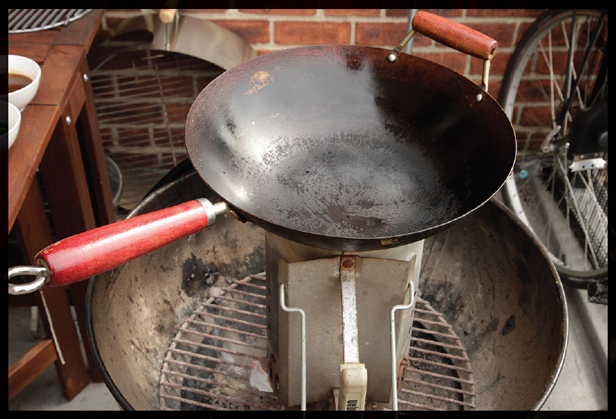
There are a couple difficulties to look out for here. The first is stability. A wok full of food can be a little precarious resting on top of a tall chimney, so make sure you have plenty of clearance around the grill just in case you accidentally knock the chimney over.
The second is that your wok will disrupt air flow in the chimney, which means that the coals inside will stop combusting while you are cooking. Make sure those coals are glowing hot before you place your wok on top, make sure to lift the wok occasionally to give the coals a breath of fresh oxygen, and leave the wok off the chimney while you aren’t actively cooking with it. Alternatively, after your coals are glowing, you can dump them out, flip the chimney over, use a pair of long tongs to place the coals into the part of the chimney where the newspaper generally goes, and cook like that. The vent holes your chimney already has to provide fuel to kindling during normal use should be ample for ventilation during stir-fries.
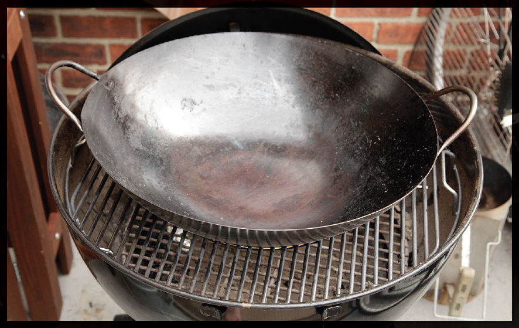
There are also grill grates with a center hole removed designed to hold a wok in place available for the standard Weber kettle grill. This works alright, but it’s difficult to manage the flame level, and without a flame guard, your hands get hot.
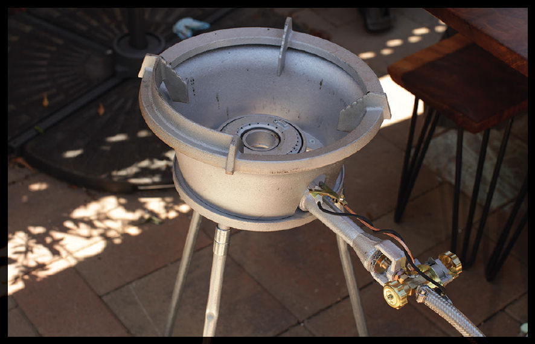
If you want to buy a more specialized piece of equipment, consider investing in a restaurant-grade wok burner. My favorite can be found at outdoorstirfry.com. It connects to a standard propane tank fitted with a 20-psi regulator and has a heat output of up to 160k BTU/hour—more than enough to cook big batches of restaurant-grade dishes for your family and friends. The Kahuna Burner made by Eastman Outdoor is a little more budget-friendly and still produces an ample 65k BTU/hour of heat, which is sufficient to cook four-serving batches of any recipe in this book.
BEFORE YOU STIR-FRY OUTDOORS
A few notes before you jump in and start grill-wokking or cooking on a dedicated restaurant-grade wok burner: This is not the world’s safest cooking method. Things are hot, fast, and furious. Before you begin, I suggest the following (lest you learn the hard way):
•Make sure you have plenty of clearance. Things can and will get very hot, and the last thing you want to do is find out that the flowers two feet away from the grill are wilting from the heat or that the stairwell is about to catch fire.
•Have on hand a stack of clean, dry dish towels or heatproof gloves. To move the wok around, you’re going to need hand protection. I use dry dish towels (wet towels will steam and burn your hands) for both the hand that shakes the wok around and the hand that wields the spatula. If you are using a heavy wok, you’ll probably need both hands to lift it to get the food out at the end. It’s a good idea to have another helper nearby to scrape the food out with the spatula while you tilt the wok over a serving platter.
•Have a heatproof area nearby to place the wok. In the midst of cooking, there may be times when you find that your wok is getting too hot. During these times, you’ll want a safe place to rest it while it cools a bit. I use a small galvanized steel trash can and rest the wok right on top (it’s the same can I use to store my spent ashes before discarding). This is also a good place to rest the wok while you clean it between dishes (I use water and a soft scrubby held with a long pair of tongs).
•If using a restaurant-style wok burner, check that the ring you rest the wok on is oriented correctly. Frequently, the rings will be open on three sides but have a heat shield on the fourth. That heat shield should be facing toward you in order to protect your hands and body from the flames that will lick up the other three sides of the wok.
•Bring friends. Nothing sadder than letting a good stir-fry go to waste. (That is, nothing sadder except for reheated stir-fries.)
Q I’ve heard about this thing called wok hei, the “Breath of a Wok.” What’s that all about?

A Growing up, my dad would take us out for beef chow fun at Sun Lok Kee, our favorite Cantonese restaurant in Chinatown. (In 2002, it, like several of my childhood favorite Chinese restaurants, burned down.) Their chow fun, cooked dry style, had incredibly tender beef and nice, chewy rice noodles, but the hallmark was what my dad referred to as “that nice smoky flavor.”
What he was referring to was a flavor later coined wok hei by Grace Young in her book The Wisdom of the Chinese Kitchen. The literal translation is “wok energy” or “wok aroma.” Some define it as the unique smokiness that dishes stir-fried over extremely high heat acquire, but that’s by no means the agreed-upon definition.
Young identifies it as “when a wok breathes energy into a stir-fry, giving foods a unique concentrated flavor and aroma.” In The Chinese Kitchen, Eileen Yin-Fei Lo says it’s when “the proper amount of fire is made to curl up around the bowl of the wok to cook foods precisely to that point of optimum flavor.”
Watch a Cantonese chef cook a batch of chow fun and you’ll see this in action. As food gets tossed through the hot zone behind the wok, tiny droplets of aerosolized oil will ignite and flare up. With a big enough burner and enough stirring, that flame will actually leap down and dance across the inner surface of the wok itself. The burnt oil in turn leaves small, sooty deposits on the food as it gets tossed through the flames. It’s the flavor of these sooty deposits—the same flavor that develops as a hamburger drips fat onto red hot coals below it—that I most strongly associate with wok hei.
Q Does good Chinese food need wok hei?
A My friends Steph Li and Chris Thomas, the Shenzhen-based couple behind the popular YouTube channel Chinese Cooking Demystified, describe wok hei as “that taste of the first bite of a hot restaurant stir-fry. It’s got that taste of the restaurant oil, the slightly deeper restaurant browning, the heavier restaurant seasoning.” Li added: “Seeing home cooks outside of China being obsessed about wok hei has always been kind of bewildering to me.” In fact, until recently, the concept of wok hei was not widely known outside of the Cantonese regions of southeastern China, and virtually all home-style Chinese cooking gets along just fine without it.
This made me rethink my entire relationship with wok hei and why it plays such an outsized role in my perception of good Chinese food. I believe it all comes down to the fact that Americans largely experience Chinese food through the lens of restaurants, and specifically Cantonese restaurants. Chinese food in America has its earliest roots in Cantonese cuisine (according to Andrew Smith’s Eating History: 30 Turning Points in the Making of American Cuisine, there were five Chinese restaurants in San Francisco by 1850, started by Cantonese immigrants who arrived during the Gold Rush).
Wok hei is a flavor I cherish and chase, but it’s by no means necessary for great wok cooking, and that’s reflected in the recipes in this book: Plenty of dishes require no wok hei at all, and plenty more dishes that typically do have wok hei will still be plenty delicious even without it. That’s good news. It means even as a complete stir-fry noob, your dry-fried beef chow fun is gonna start out delicious and only get more so from there.
Q But what is the flavor? Where does it come from? What’s so different about cooking in a restaurant?
A Some have claimed that good wok hei comes from rapid Maillard browning and caramelization. If this were the case, cooking in a heavy Western-style skillet, which is wonderful at browning foods, should produce more wok hei than a wok. To test this, I did a number of blind taste tests, stir-frying noodles, beef, and vegetables in three different ways:
 The first I cooked in a Western-style skillet.
The first I cooked in a Western-style skillet.
The second I cooked in a nonstick wok, gently stirring and tossing the food.
The third I cooked in my own well-seasoned carbon steel wok, more vigorously stirring and tossing.
As expected, of the three finished stir-fries, the one cooked in the Western skillet had the most browning and caramelization. However, neither the stir-fry cooked in the Western skillet nor the one gently tossed in a wok had any wok hei to speak of. Only the stir-fry cooked in a wok with vigorous tossing and stirring and direct exposure to flames came out tasting the way it should. I subsequently tested the nonstick wok and carbon steel wok again, this time vigorously stirring and tossing with both of them and allowing the flames of the burner to leap into the food.
This time, the nonstick wok achieved a small amount of wok hei, but nowhere near the level of the carbon steel wok.
The testing indicated that both the technique of rapidly tossing and allowing the flame of the burner to enter the wok and the material of the wok itself play an important role in wok hei flavor.
Q Are there any other elements involved in wok hei?
A On his YouTube channel, Sichuan-based chef Wang Gang emphasizes the importance of adding soy sauce around the perimeter of the wok, rather than directly onto the food. In her 2010 book, Stir-Frying to the Sky’s Edge, Grace Young says the same. According to Young, adding sauces to the center of the wok decreases the temperature of the searing zone in the center, which can cause meat and vegetables to steam rather than sizzle. This is true, but there’s something else at play here.
When you splash soy sauce around the perimeter of a wok, it immediately sizzles and sputters. Watching this happen, I was reminded of a Mexican cooking technique I learned from the late chef David Sterling at his home in the Yucatán: as he tipped fresh salsa into a ripping-hot preheated saucepan, it immediately superheated and erupted in a steamy sputter, giving it a richer color and smoky undertones. Could this concept of a seared sauce also be a factor in wok hei flavor?
To test this, I made two identical batches of lo mein, changing only the manner in which I finished them. For the first, I finished by splashing two tablespoons of soy sauce around the perimeter of the wok, while simultaneously splashing two tablespoons of water into the center of the wok. For the second, I swapped the water and soy sauce. (Adding water to the test ensured that both batches would experience the same cool-down effect of liquid added directly to the center, while only one would develop seared soy sauce flavors.) The difference was stark. Adding soy sauce to the center of the wok left the noodles with a raw soy sauce flavor, while drizzling it around the hot edges of the wok created smoky flavors reminiscent of grilled meat.
This was the final key to unlocking true wok hei flavor, and my beef chow fun has never tasted better.
Q Give it to me straight. Where does wok hei come from?
A In my testing, I’ve narrowed it down to three elements:
1The intense flavors you get through high-heat cooking, specifically the flavors imparted by the layer of polymerized oils in a well-seasoned wok, and the rapid cooking that the action of constantly tossing food through a cloud of its own steam allows for (see “What Happens When You Toss?” on here)
2The singeing of aerosolized fats that occurs as flames lick up over the back of the wok and into the food
3The searing of soy sauce and other liquids added around the perimeter of the wok during the last stages of a stir-fry
Q OK, that’s all well and good, but it sounds to me that, without a gas burner, and a powerful one at that, achieving wok hei is simply not possible for the home cook. Is there a work-around?
A For the longest time, I thought that wok hei was possible only with a powerful gas burner and a lot of practice. But I’ve discovered a reasonable work-around: If you can’t bring your food to the flame, just bring the flame to the food by using a propane or butane torch (see “The Best Kitchen Torch?” on here). A camping-style fuel tank along with a brazing head that you point directly at the food inside a wok for a few brief moments as you toss and stir it can lend that vaporized oil flavor. You’ll want to hold the torch far enough away that it doesn’t immediately singe or char the food, but close enough that the little droplets of oil that fly up as you toss food catch on fire and make tiny little crackles and pops. Four to six inches is about right for my Iwatani Pro butane torch.
If you’ve got trouble tossing with one hand while aiming the torch with the other, enlisting the help of a friend to hold the torch while you stir-fry can be a good idea. Alternatively, I’ve found that transferring the stir-fried food to a rimmed baking sheet, spreading it in a single layer, and giving it a few leisurely passes with the torch before returning it to the wok for final saucing and garnishing is a simple and effective alternative.
Got an Electric Burner? You Can Still Stir-Fry!
There is no question I get asked more frequently about stir-frying than whether it’s possible with an electric or induction cooktop. Good news: it is definitely possible. Not-as-good-but-not-as-bad-as-it-sounds news: it’s more difficult than with a gas burner.
What makes stir-frying on an electric burner so difficult? Two factors.
First: electric burners are not as responsive as gas burners. When stir-frying, you’ll find that you frequently switch between high heat and low heat or even no heat. This is easy on a gas burner: more or less gas = instantly higher or lower heat. An electric burner, on the other hand, takes a long time to heat up and cool down (induction burners are more responsive than electric burners, but not as responsive as gas). The work-around for this is making sure that your burner and wok are well preheated before cooking and making sure that there’s an empty burner set to low heat to move your wok to during cooking so you can make quick adjustments in heat input.
Second, and more important: electric and induction burners heat only the part of the pan in direct contact with the burner. This means that with a flat-bottomed wok, only the flat part of the wok will get heated. While it’s true that in a stir-fry you want heat to be concentrated on this area, a gas flame will still spread some of its energy to the sides of the wok. This is particularly important for achieving wok hei, as that heat around the edges is (a) what allows you to sear sauces when adding them around the lip of the wok and (b) creates the column of hot air and steam along the back of the wok that promotes rapid cooking and singeing of fats.
There’s no great work-around for this issue, but using a wok with a relatively large flat area along the bottom can help, as does using a kitchen torch for dishes that are improved with wok hei (see here).
The easiest work-around for all of this is to buy a portable gas burner that runs on butane cartridges. Iwatani’s ZA-3HP portable butane stove puts out an impressive 15k BTU/hour, which is more powerful than many regular home burners.
The Best Oil for Stir-Frying
If you enjoy jumping down rabbit holes, choosing the proper oil for stir-frying is a deep one. In Cantonese cuisine peanut oil is favored, while in Sichuan cuisine the oil of choice is caiziyou (see here), a roasted rapeseed oil that has a deep amber color and pungent aroma quite different from the mild rapeseed-based canola oil we can find in the United States. In Japan you’ll find centuries-old tempura restaurants that fry in nothing but sesame oil, or stir-fries that start and end with pork lard.
At home I do almost all of my stir-frying and deep frying in rice bran, peanut, or soybean oil, though virtually any heat-tolerant, neutral-flavored oil will work for most recipes.
There are two important factors when considering an oil to stir-fry with: smoke point and saturated fat content.
Cooking fats can be of animal or plant origin, but when we refer to oils—that is, fats that are liquid at room temperature—almost all of them are plant based. Virgin oils are made by crushing and pressing nuts, seeds, or other plant matter to extract oil that is then very minimally treated; typically filtering is the only treatment a virgin oil will receive. Virgin oils are packed with proteins, enzymes, minerals, and other teeny tiny bits of stuff that add flavor but make them unsuitable for cooking with even moderately high heat. All that is easily transformed by heat, turning what was once a wonderfully bright and grassy olive oil into something acrid and bitter.
Refined oils, on the other hand, are further filtered, purified, and treated to remove these contaminants. This process gives oils a longer shelf life, a higher smoke point, and a more neutral flavor. Refined oils are what you want for high-heat cooking like searing and stir-frying.
The ratio of saturated to unsaturated fat in a given oil can also affect its cooking performance. For those of you who need a quick brush-up on your seventh-grade biology, fat molecules consist of three fatty acid chains attached to a glycerol molecule. It looks sort of like the letter E, with extra-long arms. These fatty acid chains are composed of a long chain of carbon atoms, each with the ability to grab on to two hydrogen atoms. In a fully saturated fat, every carbon atom in the chain will have two hydrogen atoms attached to it (i.e., it is saturated with hydrogen atoms), which causes the arms of the E to stick out straight and stiff. In unsaturated fats, two or more carbon atoms may be missing a hydrogen atom. This causes the arms of the E to kink and bend.
This is why highly saturated fats tend to be more solid than unsaturated fats: those straightedge fat molecules are easier to pack together and stack than the kinky ones.
The saturation level of a fat is also closely linked to how crisp deep- or shallow-fried foods get. The higher the saturated fat content in your oil, the crisper your food will get.
Here’s a chart showing some common culinary oils along with their smoke points and saturated fat content.
TYPE OF FAT |
SMOKE POINT |
SATURATED FAT |
Safflower Oil |
510°F (265°C) |
6% |
Rice Bran Oil |
490°F (260°C) |
20% |
Corn Oil |
450°F (230°C) |
13% |
Soybean Oil |
450°F (230°C) |
15% |
Clarified Butter |
450°F (230°C) |
60% |
Peanut Oil |
450°F (230°C) |
18% |
Sunflower Oil |
440°F (225°C) |
11% |
Canola Oil |
400°F (205°C) |
7% |
Beef Tallow |
400°F (205°C) |
52% |
Grapeseed |
390°F (195°C) |
10% |
Chicken Fat |
375°F (190°C) |
31% |
Lard (pork fat) |
370°F (185°C) |
41% |
Vegetable Shortening |
360°F (180°C) |
23% |
Sesame Oil |
350°–410°F (175°–210°C) |
15% |
Butter |
350°F (175°C) |
65% |
Coconut Oil |
350°F (175°C) |
92% |
Extra Virgin Olive Oil |
325°–375°F (165°–190°C) |
14% |
For stir-frying we want a fat that at the very minimum has a smoke point of around 400°F. Within that range, we also want a fat that has a relatively high level of saturated fat. Clarified butter and beef tallow fit that bill nicely, but neither is inexpensive or easy to attain (and neither is vegetarian, which limits their versatility).
This leaves us with rice bran oil and peanut oil as our next best options, and these are the fats I typically use at home for both stir-frying and deep frying. The only problem is that they can get a little pricey. Soybean oil is your next best bet, and it’s available widely and cheaply. Most bottles of “vegetable oil” are a blend of soybean and corn. They will do just fine for stir-fries and deep frying.
The Best Kitchen Torch?
Kitchen torches aimed at home cooks are tiny, dinky little things barely stronger than your average lighter. What is this? A kitchen torch for ants?
Instead, go for a utility torch. Many folks will recommend propane over butane. I had always thought that propane burns hotter than butane, but in fact they burn at almost exactly the same temperature. Propane burns at 3,623°F (1,995°C), while butane burns at 3,578°F (1,970°C). The issue is that butane tanks and heads tend to be lower capacity, which means less fuel is burned at once, which means less heat is generated over a given period of time when compared to propane tanks and heads. That said, the best butane heads are more than adequate for most home cooking needs, and I find the form factor and price of butane canisters and accessories to be a strong selling point.
For the casual fire-slinger, I’d recommend getting an Iwatani Pro torch head. They cost around $40 online and fit on top of standard butane canisters, which you can find at most Asian supermarkets or camping supply stores. If you happen to already have a supply of propane canisters around the house for other purposes, I’d recommend the Bernzomatic TS4000 head, which is high output and has a trigger start.
Cutting Meat and Vegetables for Stir-Fries
There are three reasons meats and vegetables are sliced or chopped before stir-frying.
•First, stir-fried foods are typically eaten with chopsticks. Without a knife for cutting, foods must be served in bite-sized pieces.
•Second, cutting meat and vegetables into pieces allows for more rapid and even cooking.
•Finally, slicing, dicing, or julienning increases the surface-area-to-volume ratio of meats and vegetables, providing more surfaces for marinades and sauces to cling, giving the finished dish more flavor.
Depending on the particular dish, meat can be sliced into thin strips, diced into small chunks, slivered into fine julienne, or ground into mince. The latter is done with a meat grinder,# while the former three are done by hand. In each section of this chapter I’ll show you exactly how to cut various proteins, but the basics are all the same: start with a very sharp knife, dry the meat well so that it doesn’t slip, and make sure that it is very cold and firm before starting. Placing meat in the freezer for about 15 minutes can help firm it up and make it easier to slice.
Many people believe that the purpose of marinating is to add flavor. But contrary to what you may think, marinades do not actually penetrate very far into meat, even with massaging or prolonged contact (see “No Room on the Meat Train,” here, and “Experiment: How Deeply Does a Marinade Penetrate?” on here). And while a marinade packed with aromatic ingredients (like garlic, ginger, or spices) can add some flavor to meat, most of the time you’ll find that adding flavorful ingredients directly to the stir-fry or sauce is a more effective way to get flavor into a dish.
The primary purpose of a marinade is to enhance texture, and most ingredients in a stir-fry marinade are designed to do just this. Here are the basics of most marinades.
COMMON MARINADE INGREDIENTS
•Salt. Just as it does in your Thanksgiving turkey brine, salt will tenderize meat by breaking down muscle proteins (mainly the protein myosin) while also causing the meat to retain more moisture during cooking. Salt also enhances the natural flavor of foods by activating ion pathways into certain taste receptors, giving our brains a wider range of stimulation. Salted chicken doesn’t just taste saltier; it actually tastes more like chicken.
•A Salty, Flavorful Liquid. Typically this will be some form of soy sauce or fish sauce. Both of these liquids are high in salt (and we already know how that helps), but they are also rich in glutamates and inosinates, compounds that trigger our sense of umami, or savoriness.
•Sugar. Sugar can help balance out saltiness, heat, and acidity in a stir-fry. It can also help enhance the Maillard reaction, the browning reaction responsible for giving roasted or seared meats their dark color and complex flavor.
•Oil. Frequently oil will be added to marinades, especially marinades containing aromatics like spices or chiles. These aromatics have fat-soluble flavor compounds. Oil helps distribute those flavors evenly over the surface of the meat. Oil can also make it easier to separate pieces of meat when they hit the wok.
•Cornstarch. The role of cornstarch in a marinade is twofold. First, a light starchy coating can help protect muscle fibers from coming into direct contact with the hot surface of a wok, allowing you to cook and brown pieces of meat without their overcooking on the surface and becoming stringy. More importantly, cornstarch is absorptive. A light coat of cornstarch can help soak up meat juices that are exuded during cooking or sauces that are added toward the end. Think of it as a coat or primer for your meat just waiting for a new, flavorful paint job.
•Acid. Acid is frequently added in the form of wine or, occasionally, citrus juices or vinegars. It can balance out sweetness, fat, and heat. Note that with strong acids like vinegar or citrus juice (see “Experiment: Acid Test,” here), you have to be extremely careful not to overmarinate the meat. Letting meat sit in a strongly acidic environment for any extended period of time will cause its proteins to coagulate, resulting in a dry, chalky texture no matter how carefully you cook it.
•Baking Soda. The secret ingredient in many meat and shrimp stir-fries. When added to a marinade it alkalizes the surface of the meat or seafood, which in turn makes it more difficult for proteins to bond and tighten when cooked. The result is extra-tender meat and shrimp with a snappy bite. (For more, see “Experiment: Alkalized Beef,” here.)
•Egg Whites. Like baking soda, egg whites are quite alkaline and thus help meat stay tender during a stir-fry. Egg whites are also included in marinades when the meat is going to undergo the velveting process before being subsequently stir-fried. (See here for more on velveting.)
Aside from these functional ingredients, marinades will often contain flavorings like white or black pepper, chiles, and other spices, pickles, and pastes.
No Room on the Meat Train!
We know that large organic molecules don’t penetrate too far into meat because of their large size, but there’s another effect in action when talking about marinades that contain both salt and aromatic compounds: salting out, the tendency of salt to penetrate meats to the exclusion of other marinade ingredients.
It helps to think of your meat as a train, where each car is a cell, and your marinade as the platform. Waiting on that platform are molecules of various shapes and sizes. We’ve got quick, small, and zippy salt molecules and big, slow, lumbering aroma molecules. When that meat train pulls into the station, the pushy little salt molecules make a beeline for the doorways, elbowing everyone else out of the way and packing up the cars before anyone else has a shot. (If you’ve ever tried to get on a New York subway during rush hour, you know this feeling.) In fact, many of those larger molecules are so big that they couldn’t fit through the doors even if they wanted to. You end up with a car full of salt and very little else (at least nothing that wasn’t there to begin with).
Just as with a chunk of meat in a marinade, some of those larger molecules may grab on and hitch a ride on the exterior, but very few make it past the doorways.
How Deeply Does a Marinade Penetrate?
Most marinades don’t penetrate particularly far into a meat. Here’s an easy way to test it for yourself.
Materials
2 chicken breast halves of similar shape and size (preferably two breast halves split from a single whole breast)
½ cup soy sauce
4 medium garlic cloves, minced
Procedures
Place a single chicken breast half into a zipper-lock bag with ¼ cup of the soy sauce and half of the garlic. Squeeze out as much excess air as possible, then seal the bag, squishing it around a bit to ensure that the chicken is completely coated on all sides with the soy sauce. Place the bag in the refrigerator overnight.
The next day, place the second chicken breast half in a zipper-lock bag with the remaining ¼ cup soy sauce and remaining garlic, squeeze out the air, and seal it, turning to make sure the second chicken breast is also coated in soy sauce. Place the second chicken breast in the refrigerator and let it sit for 30 minutes to an hour.
Remove both chicken breasts, pat them dry on paper towels, then cook them by poaching them in simmering water or roasting them in a 400°F oven until they reach an internal temperature of at least 150°F. Let the chicken breasts cool, then slice them in half.
Results and Analysis
You’ll notice that whether marinated overnight or for only 30 minutes, the soy sauce has barely penetrated the meat, coloring only the very outer layer. If you carefully trim away this outer layer (making sure the inner parts of the chicken breast don’t come into contact with excess juices on the cutting board) and taste the two chicken breasts side by side, you’ll find that neither one will have any discernible soy sauce or garlic flavor in the interior.
The chicken marinated overnight should taste saltier and juicier, however. What’s going on here? Unlike large aromatic molecules, salt will readily pass through cell walls and travel into the meat. As it penetrates, it dissolves some muscle proteins, which in turn loosens the structure of the meat, helping it to retain more moisture as it cooks. This is the principle behind brining or curing meat and the reason that brined or cured meats stay juicier during cooking than unsalted meats.
Washing Meat for Stir-Fries: More Important Than You Think
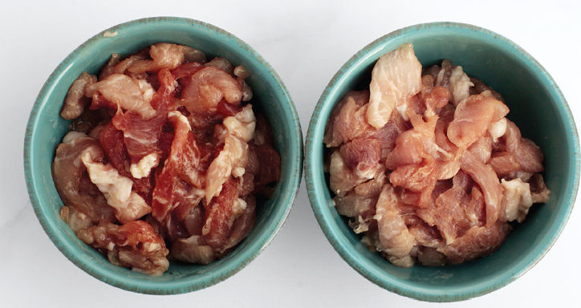
Most Western recipes for stir-fries that I’ve seen recommend cutting meat, tossing it with marinade, and setting it aside. Chinese instructors, on the other hand, will often recommend washing sliced meat in cold water before squeezing out excess moisture and marinating, purportedly to tenderize meat and give it a cleaner flavor that absorbs sauce more readily.
I tested this side by side with two batches of sliced pork. The first I washed thoroughly in cold water before squeezing dry in a fine-mesh strainer and stirring with a basic marinade. The second I sliced and immediately stirred with the marinade. There was an immediate visual difference between the two batches: The washed pork had a distinctly paler color.
After letting both batches rest for half an hour, I stir-fried them and tasted them side by side. The differences were subtle but noticeable. The pork that had been washed vigorously had a more tender, almost slippery texture (a good quality in most stir-fried meats) and was more thoroughly seasoned—the mechanical action of washing and squeezing loosens up the muscle fibers of the meat, improving their ability to absorb and retain marinade. Given it’s such an easy process, I’ve taken to doing it for all my stir-fries.
*Or at least until I get one of those awesome live-fire grills they have at fancy restaurants with the pulleys on the sides that let you lift the grates up and down. Those things are so cool.
†Unless you really enjoy it, in which case go for it! Rule number one of cooking is: don’t let anyone else tell you what you enjoy.
‡In many Asian cuisines, the rice is supposed to be bland, or at least subtle. It’s used as a counterpoint to intensely flavored dishes or toppings. When I cook rice to go with stir-fries, I don’t even add salt to it, although nothing stops you from doing so if you like.
§A British Thermal Unit (BTU) is a unit of energy equivalent to around one kilojoule.
¶Or, as Dave Arnold, author of Liquid Intelligence and the genius behind the Cooking Issues blog, calls them, “cooking detectors.”
#OK, traditionally ground meats for stir-fries are chopped by hand using a large cleaver or chef’s knife. This process produces a mince that is more varied in texture, which is great for dishes where ground meat is the star, such as Lao/Thai lap salads. But for most purposes, preground mince from the supermarket will do. Unless you’re really trying to use up an excess of elbow grease.